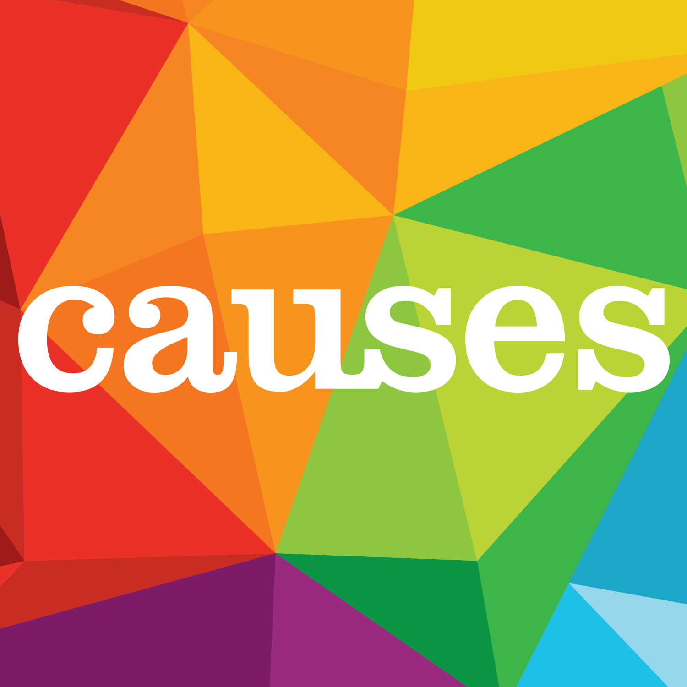

IELTS causes and solutions essay - band 9 guide
In this lesson you will learn how to write a high-scoring causes & solutions essay in IELTS Writing. As an example, the model essay will be about loss of bio-diversity. Basically, causes & solutions essay is one of the most common question types in IELTS writing task 2. This question asks you to describe causes and propose solutions for a given problem.
In this lesson you will see:
- question sample + model answer
- band 9 answer structure for causes & solutions essay
- effective strategies to produce ideas for your answer
IELTS problems & solutions question sample
For example, this is the question you’ve got for IELTS writing task 2:
Influence of human beings on the world's ecosystem is leading to the extinction of species and loss of bio-diversity.
What are the primary causes of loss of bio-diversity?
What solutions can you suggest?
Of course, the topics for causes & solutions essay may vary, but the answering strategy is pretty much the same for all essays of causes/solutions type.
Producing ideas
As you know, it’s recommended to spend about 40 minutes on IELTS Writing task 2. But before starting to write your essay, it’s a good idea to dedicate 2-4 minutes to producing some ideas for your essay. This way you’ll know what to write about and your essay will be more structured.
To produce ideas for causes and solutions essay, you have to determine 3 things:
- Problem
- Causes of this problem
- Solutions to this problem
The problem is already given: loss of bio-diversity (in other words, some animals and plants are dying out).
Now let’s think about its causes and solutions. Don’t be afraid of simple ideas! Remember: getting a high score means writing simple things well. Here are some ideas that may come to your mind:
Causes:
- change of the natural habitats
When humans artificially transform the environment (build roads, houses etc.), they destroy animals’ natural habitat.
- pollution
Pollution negatively changes the flow of energy, the chemical constitution of the environment and the climate in general, so a lot of species cannot live under such conditions and die out.
- overexploitation of resources
When the activities connected with capturing and harvesting a natural resource are too intense in a particular area, the resource becomes exhausted. Example: too intense farming exhausts the soil; too frequent fishing, which doesn’t leave enough time for fish to reproduce, makes fish disappear.
After you’ve though of the possible causes, you can use them in your writing. You can invent more reasons of this problem, but usually, it’s enough to give 1-2 causes in your writing.
Possible solutions:
- protect areas
- promote awareness
Informing the general population about the disadvantages of loss of biodiversity will encourage people to be more conscious of the environment.
Protecting areas where human activity is limited and avoiding overexploitation of resources are the best ways to save the environment and prevent species from dying out.
1-2 solutions are enough for a good essay. Now, after we’ve collected some ideas, it’s time to structure our thoughts into an essay.
Band 9 answer structure for causes & solutions essay
There may be many possible answering strategies, but we’ll use this good and time-tested essay structure:
- Introduction
- Body paragraph 1 – causes
- Body paragraph 2 – solutions
- Conclusion
Introduction
Write the introduction in 2 sentences:
- Sentence 1 - paraphrase the question (restate the problem):
Despite knowing about biodiversity’s importance for a long time, human activity has been causing massive extinctions of different species.
- Sentence 2 - tell the examiner what you’re going to describe in your essay:
This essay will examine the main causes of loss of biodiversity and possible solutions of this problem.
Body paragraph 1 - causes
- Sentence 1 - state 2 main causes:
The two main causes of species extinction are change of their habitats and overexploitation of natural resources.
- Sentences 2-4 - explain the first cause + give an example:
When humans artificially transform the environment, they destroy vegetation and animals’ natural habitat. For instance, to build new roads people are cutting down the trees and cementing the soil, altering the environment. Because of that, a lot of species are dying out.
- Sentences 5-7 - explain the second cause + give an example:
Also, when the activities connected with capturing and harvesting a natural resource are too intense in a particular area, the resource becomes exhausted. For example, too frequent fishing doesn’t leave enough time for fish to reproduce and makes them disappear.
- The last sentence - give a short summary (if needed)
In other words, human activities often deplete local flora and fauna and cause loss of bio-diversity.
Body paragraph 2 - solutions
- Sentence 1 - give 1-2 possible solutions
Some possible solutions to this problem are protecting natural areas and promoting awareness among people.
- Sentences 2-4 - explain how each of the solutions solves the problem (you may give an example if you wish)
By protecting areas where human activity is limited and avoiding overexploitation of its resources, we can save the untouched environment and prevent species from dying out. Moreover, the next step in fighting bio-diversity loss is informing the general population about the dangers of this problem. This way, people will be more conscious of the environment and won’t overuse or destroy its resources.
Conclusion
- Sentence 1 - restate the causes of the problem
To conclude, people’s activities that change the environment have negative impact on the world's ecosystem.
- Sentence 2 - remind the reader of possible solutions
However, we can significantly lessen the extinction of species by protecting natural areas and enlightening people as to this problem.
Model essay for IELTS Writing causes/solutions question
The model band-9 essay for this question will look as follows:
Despite knowing about biodiversity’s importance for a long time, human activity has been causing massive extinctions of different species. This essay will examine the main causes of loss of biodiversity and possible solutions of this problem.
The two main causes of species extinction are change of their habitats and overexploitation of natural resources. When humans artificially transform the environment, they destroy vegetation and animals’ natural habitat. For instance, to build new roads people are cutting down the trees and cementing the soil, altering the environment. Because of that, a lot of species are dying out. Also, when the activities connected with capturing and harvesting a natural resource are too intense in a particular area, the resource becomes exhausted. For example, too frequent fishing doesn’t leave enough time for fish to reproduce and makes them disappear. In other words, human activities often deplete local flora and fauna and cause loss of bio-diversity.
Some possible solutions to this problem are protecting natural areas and promoting awareness among people. By protecting areas where human activity is limited and avoiding overexploitation of its resources, we can save the untouched environment and prevent species from dying out. Moreover, the next step in fighting bio-diversity loss is informing the general population about the dangers of this problem. This way, people will be more conscious of the environment and won’t overuse or destroy its resources.
To conclude, people’s activities that change the environment have negative impact on the world's ecosystem. However, we can significantly lessen the extinction of species by protecting natural areas and enlightening people as to this problem.
(263 words)